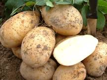
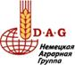
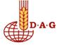
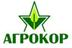
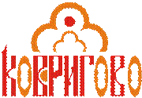

ПРЕЗЕНТАЦИЯ
Администрация Шемышейского района сообщает адреса
сайтов местных товаропроизводителей района:
ООО «Сурский картофель» - www.sura-kartofel.ru,
ООО «Ковригово» - www.kovrigovo.ru,
ООО «Сурский картофель»
ООО "Сурский Картофель" выращивает и
поставляет качественный продовольственный и семенной картофель круглогодично.
Мы возделываем наш урожай на экологически чистых полях Пензенской области, на берегу Сурского водохранилища.
Наш картофель не содержит ГМО и вредных веществ, которые иногда используют производители, гонящиеся за объемом и товарным видом урожая!!!
Мы рады предложить к столу российского покупателя экологически чистый, отборный, с замечательными вкусовыми качествами картофель, выращенный в Шемышейском районе Пензенской области!
Мы предлагаем:
·
Продажа оптом
высококачественного картофеля круглый год.
·
Быструю и
бережную, полностью механизированную отгрузку картофеля любыми партиями.
·
Хранение
картофеля по новой технологии
·
Доставку
картофеля от 0,5 тонны до 50 тонн по Пензенской области и по всей
России.
·
Сельскохозяйственную
технику и запчасти для производства, уборки, хранения и переработки картофеля.
·
Каждому клиенту
индивидуальный подход.
ООО "Сурский картофель" тесно сотрудничает с торговыми
сетями, обеспечивающими российских покупателей качественным отечественным
картофелем.
Для выращивания мы выбрали самые вкусные сорта продовольственного картофеля: Роко, Розара, Аврора, Невский, Удача, категория от 5+.
Картофель отколиброван и расфасован в сетку 35-38кг. Сертифицирован и имеет гарантию качества.
Располагаем собственным хранилищем - поставки КРУГЛОГОДИЧНО!!!
Продаем картофель оптом от 20 тонн. Предоставляем хорошие скидки от объема!
Партнеры:
|
 |
Поставщик картофельной и прочей
сельскохозяйственной техники, запчастей, ГСМ, шин для тракторов и комбайнов. |
|
 |
ООО «Д.А.Г.-58» поставщик сельхозтехники и запчастей для предприятий агропромышленного комплекса в Пензенской области. |
|
 |
Поставка качественных семян, удобрений, препаратов от болезней растений и для борьбы с сорняками |
КОНДИТЕРСКАЯ ФАБРИКА
"КОВРИГОВО"
"Ковригово" ® и "Шоколарь" ® - являются зарегистрированными товарными знаками и
охраняются Законом РФ об авторских правах.
КОНДИТЕРСКАЯ ФАБРИКА
"КОВРИГОВО"
начала свою историю с 1963г. как Шемышейский пищекомбинат и
хлебозавод, производя кондитерские и хлебобулочные изделия. В 2003г. комбинат
стал собственностью компании "КОСТА" -
производителя современного высокотехнологичного оборудования для кондитерской и
пищевой промышленности. После полной реконструкции и переоснащения начала свою
работу Шемышейская кондитерская фабрика. Мы рады представить потребителю в
широком ассортименте кондитерские изделия под торговой маркой "Ковригово", а также шоколадную и кондитерскую глазурь для
производства печенья, конфет, тортов, мороженого и т.п. под торговой маркой "Шоколарь".
Фабрика находится в самом экологически чистом районе Пензенской области. В
производстве используются только натуральное сырье и ингридиенты, а также вода
из артезианской скважины. Все это позволяет говорить о безопасности нашей
продукции для здоровья потребителя.
КОНДИТЕРСКАЯ ФАБРИКА
"КОВРИГОВО"
поставляет свою продукцию в более 26 регионов России и ближнего зарубежья. Все
это благодаря привлекательным ценам, неизменно отличному качеству продукции,
высокому уровню обслуживания клиентов и постоянному наличию товаров на
специально оборудованном складе.
КОВРИГОВО ( КОНДИТЕРСКАЯ ФАБРИКА )
 |
|
Наименование: |
КОВРИГОВО ( КОНДИТЕРСКАЯ ФАБРИКА
)
|
|
№: |
551 |
|
Адрес: |
Россия,
Пензенская область, р.п.Шемышейка, ул.Промышленная,9 отдел сбыта 440061,
Россия, г. Пенза, |
|
Телефон: |
(8412)
52-38-60, 49-17-77 |
|
E-mail: |
|
|
Сайт: |
|
|
Продукция: |
КОНДИТЕРСКАЯ
ФАБРИКА "КОВРИГОВО" начала свою историю с 1963г. как Шемышейский
пищекомбинат и хлебозавод, производя кондитерские и хлебобулочные изделия. В
2003г. комбинат стал собственностью компании "КОСТА" -
производителя современного высокотехнологичного оборудования для кондитерской
и пищевой промышленности. После полной реконструкции и переоснащения начала
свою работу Шемышейская кондитерская фабрика |